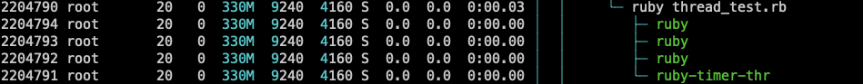

Linux pid, tid
在linux下，通过htop/top命令查看的进程/线程都是只有pid的，那么具体的tid信息是怎么获得的呢，以及他们的关系是怎样的?
stackoverflow有一个回答写的很好：
It is complicated: pid is process identifier; tid is thread identifier.
But as it happens, the kernel doesn’t make a real distinction between them: threads are just like processes but they share some things (memory, fds…) with other instances of the same group.
So, a tid is actually the identifier of the schedulable object in the kernel (thread), while the pid is the identifier of the group of schedulable objects that share memory and fds (process).
But to make things more interesting, when a process has only one thread (the initial situation and in the good old times the only one) the pid and the tid are always the same. So any function that works with a tid will automatically work with a pid.
It is worth noting that many functions/system calls/command line utilities documented to work with pid actually use tids. But if the effect is process-wide you will simply not notice the difference.
意思就是pid 是进程的标识符，tid是线程的标识符, 但是内核并不会真正的区分他们，线程仅仅是像一个进程但是可以和同一个组里的线程共享一些资源，比如内存，文件描述符等等，tid就是实际上内核调度的标识符，所以我们htop/top看到的某个线程的pid实际上就是tid, 它也一定绑定了一个进程的真正pid，如果进程只有一个线程，那么这么pid和tid就应该是相同的。
实际实验：
- 写一个脚本：
1 | [ |
- 执行过程中看看htop的信息：

centos 4.19.43-300.el7.x86_64 版本下htop查看某个进程开了多个线程下的结果
注：ruby中设置线程name在某些平台可能并不会生效
set given name to the ruby thread. On some platform, it may set the name to pthread and/or kernel.
可以看到，第一列是pid，每个线程拥有不同的pid，但是实际上是同属于一个父进程的，看到它们占用的资源是一样的
系统调用：
1 |
|
Output:
1 | parent, the tid=139702253516608, pid=2278980 |
getpid - 返回父进程的pid
syscall(SYS_gettid) -返回线程pid
pthread_self - 返回tid，在同一进程下不同，但是在不同进程下可能相同